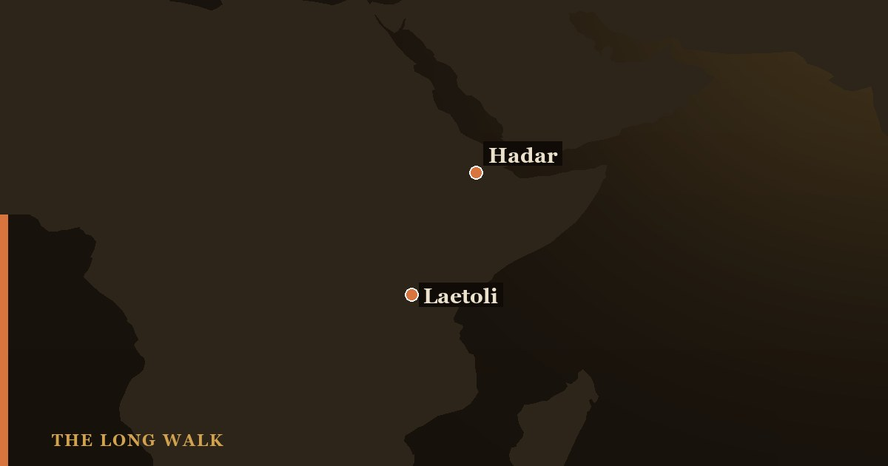

The Laetoli footprints are about 70 hominin tracks pressed into wet volcanic ash in northern Tanzania 3.66 million years ago and found by Mary Leakey’s team in 1978. They are usually credited to Australopithecus afarensis, Lucy’s species, and show a human-like, upright stride. New trails found in 2015 show one walker roughly 1.65 m tall, and a 2021 study argues a second hominin species left prints nearby. Both claims are debated.
The most famous trackway in human evolution was found because of an elephant-dung fight. In 1976, at Laetoli in northern Tanzania, palaeontologist Andrew Hill ducked to dodge a thrown lump of dung and noticed animal prints in the hardened ground beneath him. Two years later, in 1978, Paul Abell, a member of Mary Leakey’s team, spotted a hominin print at a locality called Site G.
Excavation exposed the Laetoli footprints: about 70 prints in two parallel trails, running for almost 27 metres. Leakey and geologist Richard Hay published them in Nature in 1979. They remain the oldest firmly accepted footprints of a bipedal hominin.

How a volcano made the Laetoli footprints
The prints sit in a layer called the Footprint Tuff. A tuff is rock made of compacted volcanic ash. A nearby volcano dusted the landscape with fine ash in a series of eruptions. Light rain turned the surface damp, animals walked across it, and the ash then set hard before more ash buried it. The tuff even preserves raindrop impressions.
Argon dating of the layers puts the Site G trackway at 3.66 million years. The ash fell over a short period, so all the prints on a given surface were made at roughly the same time — though “the same time” could still mean hours or days apart.
Hominins were a tiny fraction of the traffic. Across 18 Laetoli sites, researchers have recorded more than 11,300 animal footprints. Most were left by hares and small antelope, but there are also tracks of guineafowl, giraffes, rhinos and three-toed horses.
Who walked at Site G?
The prints at Site G were read as three individuals, labelled G1, G2 and G3. G1, the smallest, walked in its own trail. G3 stepped into the prints of the larger G2, almost exactly, which is why that trail is hard to measure. Seen together, they look like a small group crossing open ground in the same direction.
The trackmakers are almost always credited to Australopithecus afarensis. It is the only hominin species whose bones have been found in the same rock unit at Laetoli. The type specimen of the species, a jaw catalogued LH 4, also comes from Laetoli. That is a strong circumstantial case, but footprints carry no DNA and no name tags, and a minority of researchers have argued the feet look too modern for afarensis. To meet the species, see our guide to Lucy.
Reading a gait from ash
The prints show a heel strike, a raised arch and a big toe in line with the other toes rather than splayed out like an ape’s. But the most important question is how the walkers moved their legs.
Chimpanzees walking upright do so with bent hips and bent knees. In 2010, David Raichlen and colleagues tested this experimentally in PLOS ONE. They had people walk through sand both normally and in a crouched, bent-knee posture. The depth pattern of heel and toe in the Laetoli prints matched normal, straight-legged human walking, not the crouch.
The finding is significant because afarensis skeletons still had long arms and curved fingers, traits often linked to climbing. Laetoli shows that a human-like stride had already evolved by 3.66 million years ago, even in a body that had not fully abandoned the trees.
Site S: the tall walker
In 2015, a team surveying the ground for a planned museum dug test pits about 150 metres south of Site G. In what they called Site S, they found 14 new hominin prints on the same ash surface, heading in the same direction. Thirteen came from one individual (S1) and one from a second (S2). Fidelis Masao and colleagues published them in eLife in 2016.
S1 was big. Using foot-to-height ratios based on afarensis, the team estimated:
| Trackmaker | Avg. print length | Est. stature | Est. body mass |
|---|---|---|---|
| G1 | 180 mm | 111–116 cm | 28–33 kg |
| G2 | 225 mm* | 139–145 cm | 36–41 kg |
| G3 | 209 mm | 129–135 cm | 33–38 kg |
| S1 | 261 mm | 161–168 cm | 41–48 kg |
| S2 | 231 mm* | 142–149 cm | 37–42 kg |
Figures from Masao et al. (2016), Table 3, using australopith-based ratios. *G2 is based on only two measurable prints and S2 on a single print.
At roughly 1.65 metres, S1 was taller than any afarensis estimate from bones, and more than 20 cm taller than G2. For comparison, Lucy stood about 1.1 metres.
A family outing? Probably not that simple
The Masao team tentatively suggested that S1 was a male and the others were females or juveniles, implying gorilla-like differences in size between the sexes and perhaps a gorilla-like social system. It is an intriguing idea, and the authors call it tentative. There are three reasons to hold it loosely:
- The ratios rest on very little. Peer reviewers noted that the australopith foot-to-height ratio comes largely from one partial skeleton, Lucy.
- Same surface does not mean same moment. Five walkers heading the same way could have passed hours apart.
- Size alone does not reveal sex or age. The authors themselves say the Site G individuals cannot be sexed with confidence.
The popular image of a mother, father and child walking together is a museum reconstruction, not something the prints demonstrate.
A second species at Laetoli?
Two years before Site G, in 1976, Peter Jones and Philip Leakey had found five odd, bipedal-looking prints at Site A. Mary Leakey tentatively called them hominin, but later researchers suggested a bear walking on its hind legs, and the trail was largely forgotten.
In 2019, Ellison McNutt and colleagues re-excavated Site A and compared the prints with those of American black bears, chimpanzees and humans. In Nature in 2021, they argued that the tracks were made by a hominin, and that its walk was unusual: a cross-stepping gait, where each foot crosses the body’s midline. The foot shape also differed from the Site G prints.
If they are right, two kinds of hominin walked the Laetoli landscape 3.66 million years ago, each in its own way. That fits other evidence of variety in early bipedalism, such as the 3.4-million-year-old Burtele foot from Ethiopia. But five prints is a small sample, and the identification is not yet universally accepted.
Why the Laetoli footprints still matter
Bones tell us what a body could do. Footprints record what one individual actually did on a single afternoon. Laetoli captures upright walking in action, nearly 3.7 million years ago, with a human-like straight-legged stride, in a species that still climbed. The new trails add one more lesson: we probably underestimate how variable these early walkers were, both in size and in style.
Laetoli is also a lesson in preservation. The Site G trail has been reburied under protective covering, and researchers now study it largely from casts and 3D scans. For how these ages are measured, see how scientists date fossils, and for the evolutionary background read why humans started walking upright. You can place afarensis in time on the interactive family tree.
See Laetoli alongside Hadar, Olduvai and the other key sites of early human evolution on the fossil-site map.
Open the fossil sites map →Frequently asked questions
How old are the Laetoli footprints?
About 3.66 million years old, based on argon dating of the volcanic ash layers at Laetoli in northern Tanzania.
Who made the Laetoli footprints?
Most researchers attribute them to Australopithecus afarensis, the species of Lucy, because it is the only hominin whose bones occur in the same rock unit at Laetoli. The footprints themselves cannot confirm the species.
Who discovered the Laetoli footprints?
Animal tracks were first noticed by Andrew Hill in 1976. The hominin trail at Site G was found in 1978 by Paul Abell, a member of Mary Leakey’s team, and published by Leakey and Richard Hay in 1979.
How many Laetoli footprints are there?
Site G has about 70 hominin prints in two trails. Site S, excavated in 2015, added 14 more from two individuals, and five disputed prints come from Site A.
Did the Laetoli hominins walk like us?
Largely, yes. Experiments published in 2010 found that the prints match straight-legged, human-like walking rather than the bent-knee gait of a chimpanzee.
- Leakey, M. D. & Hay, R. L. (1979). 'Pliocene footprints in the Laetolil Beds at Laetoli, northern Tanzania.' Nature 278, 317–323. nature.com
- Raichlen, D. A. et al. (2010). 'Laetoli footprints preserve earliest direct evidence of human-like bipedal biomechanics.' PLOS ONE 5(3), e9769. doi.org
- Masao, F. T. et al. (2016). 'New footprints from Laetoli (Tanzania) provide evidence for marked body size variation in early hominins.' eLife 5, e19568. elifesciences.org
- McNutt, E. J. et al. (2021). 'Footprint evidence of early hominin locomotor diversity at Laetoli, Tanzania.' Nature 600, 468–471. nature.com